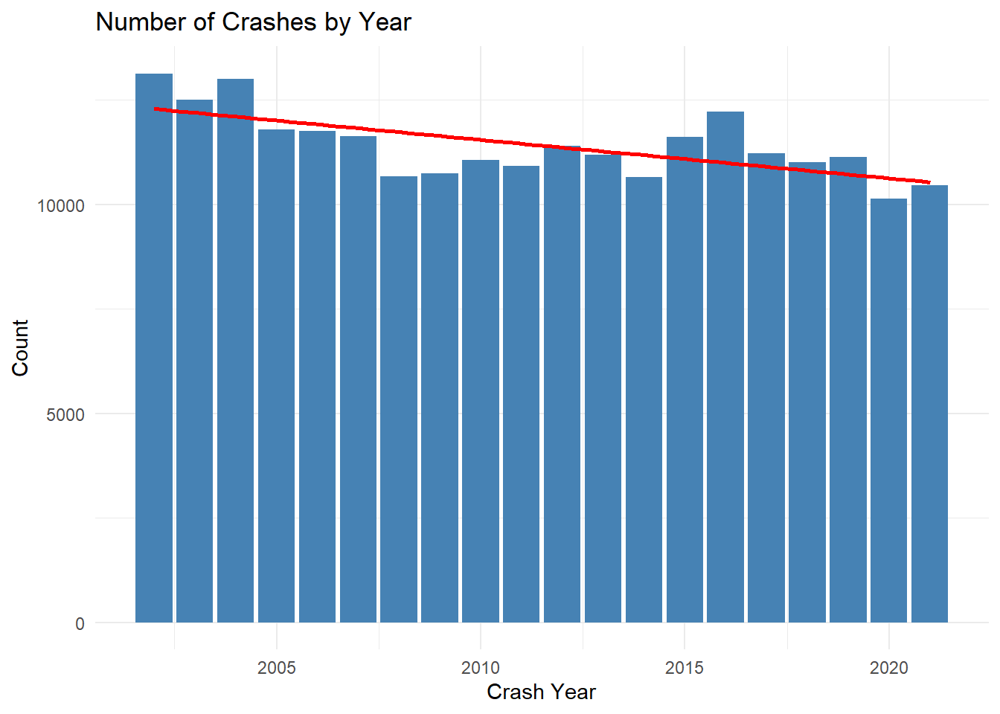
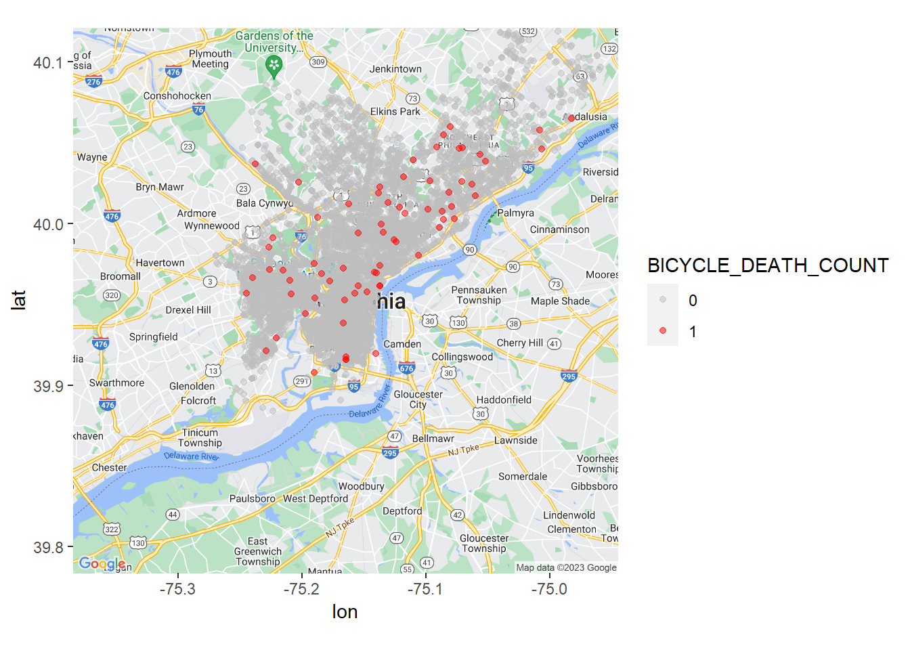
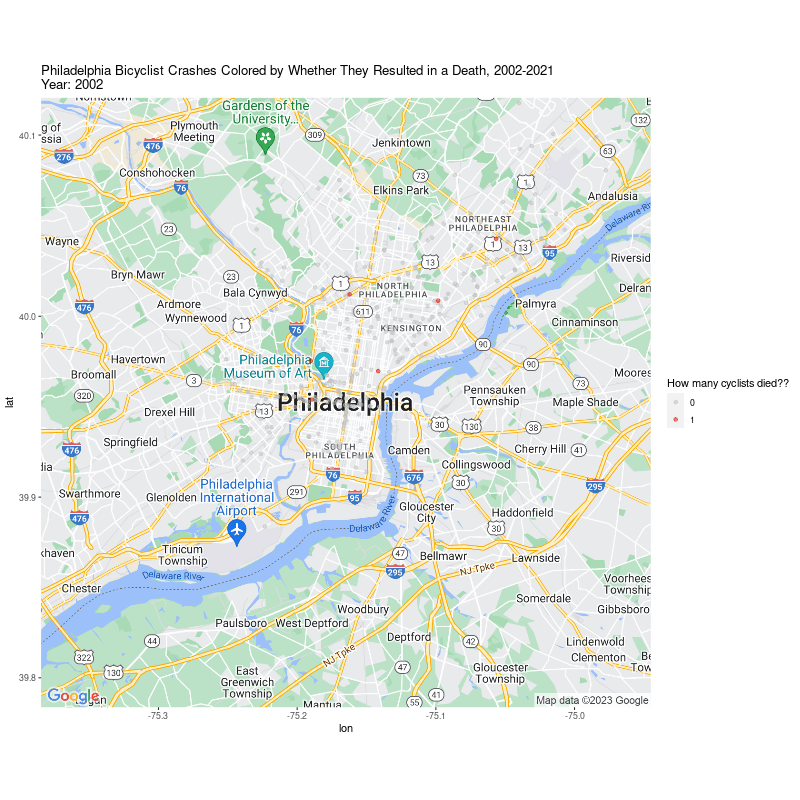
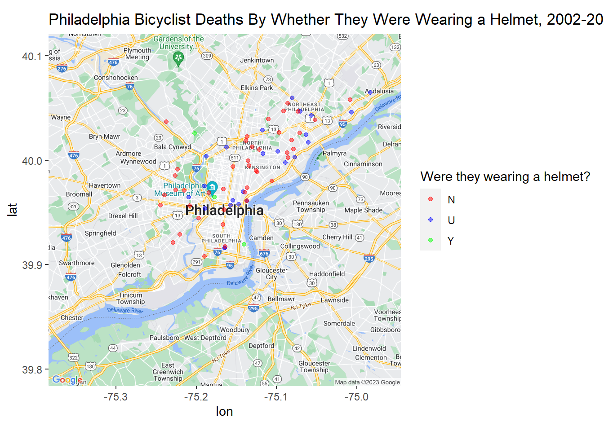
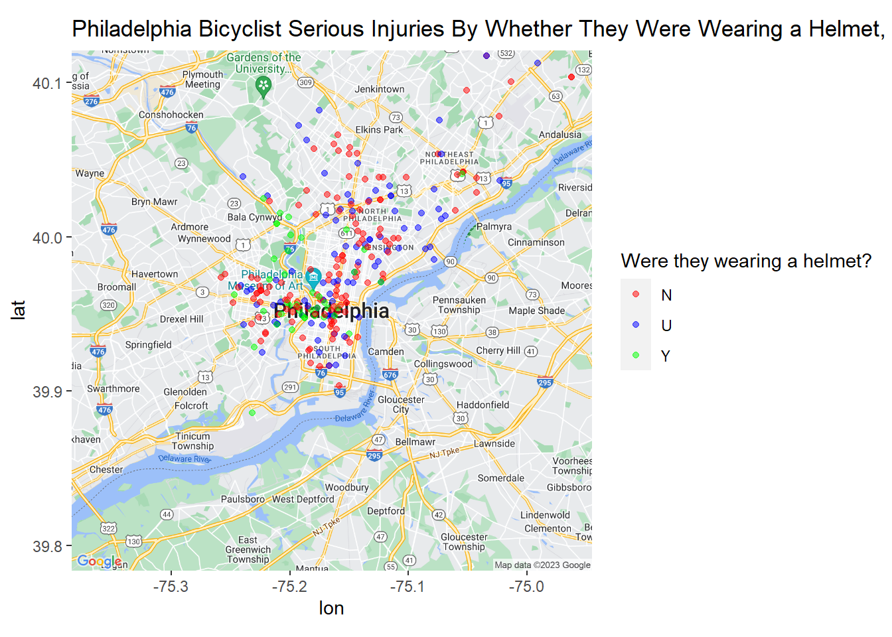
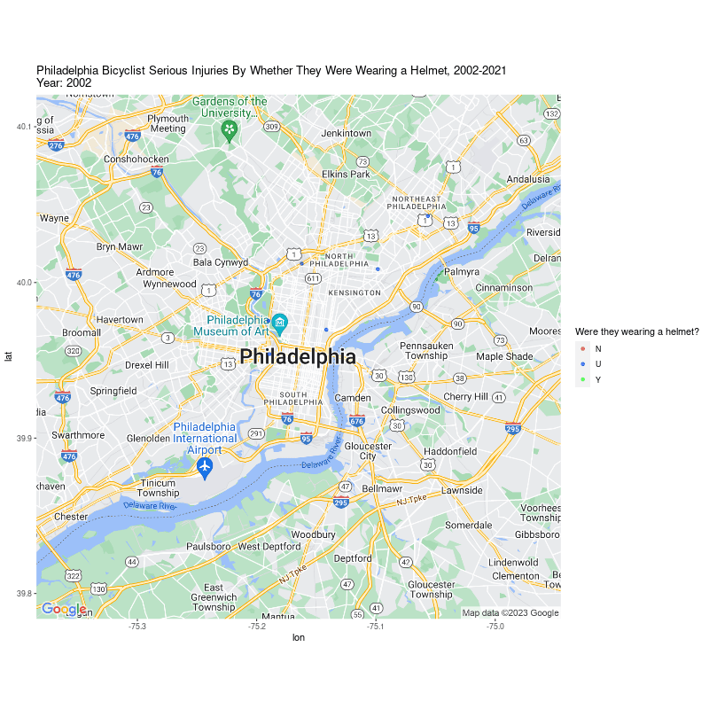
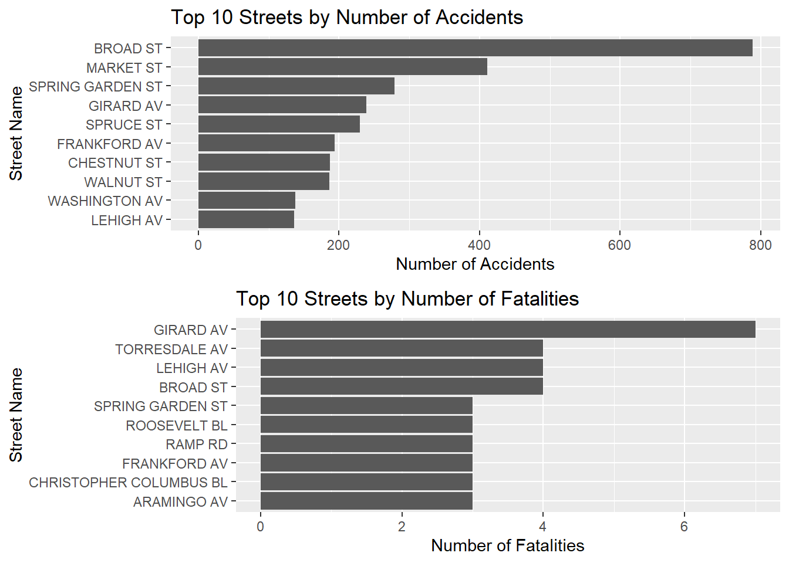

data <- list()
years <- 2002:2021
data_sets <- # Different types of collisions
c("CRASH",
"COMMVEH",
"CYCLE",
"FLAG",
"PERSON",
"ROADWAY",
"TRAILVEH",
"VEHICLE")
handle_mismatch <- function(df1, df2) {
for (colname in colnames(df2)) {
if (colname %in% colnames(df1)) {
if (class(df1[[colname]]) != class(df2[[colname]])) {
df1[[colname]] <- as.character(df1[[colname]])
df2[[colname]] <- as.character(df2[[colname]])
}
}
}
return(list(df1, df2))
}
for (data_set in data_sets) {
absolute_path <- file.path(getwd(), "data", "zip", paste0(data_set, "*"))
file_path <- Sys.glob(absolute_path)
for (i in seq_along(file_path)) {
# Load the data set from the CSV file
new_data <- read.csv(file_path[i], stringsAsFactors = FALSE)
# Combine the data
if (i == 1) {
data[[tolower(data_set)]] <- new_data
} else {
handled_data <- handle_mismatch(data[[tolower(data_set)]], new_data)
data[[tolower(data_set)]] <-
bind_rows(handled_data[[1]], handled_data[[2]])
}
}
}Philly Cyclist Crash Stats
Introduction
As part of my greater effort to branch out of purely bioinformatics-centered R analyses, I took it upon myself to experiment with producing meaningful visualizations on other topics that I am passionate about. To that end, I sought to investigate cyclist collision statistics and examine part of the cost of underfunded bicycle infrastructure.
According to the Bicycle Coalition of Greater Philadelphia, as of 2017, approximately 17,000 workers bike to work, which represents 2.6% of all workers. Despite this, bicycle infrastructure remains woefully inadequate to meet the needs of commuters and presents a significant obstacle to creating safer roads and reducing carbon emissions. Based on my own experiences, biking in Philly can be treacherous and I have, myself, put myself in harm’s way to travel around the city.
Using data sourced from PennDOT’s GIS Open Data Portal, I wanted to examine when and where cyclist collisions occurred in the Philly city limits and how many of the resulted in fatalities for the cyclists involved. The available data ranged from 2002-2021.
Extract, Transform, Load (ETL)
We will first begin by loading in the data and preparing it for data analysis.
The collision data from PennDOT for each year is broken into several categories that provide available metadata on the collision. These categories are defined in PennDOT’s OpenData metadata PDF that can be accessed in the link above.
To assist in merging the data sets across years, we create a utility function named handle_mismatch. This function reconciles differences between two data sets of the same category but from different years. For instance, if the CRASH data from 2002 and 2003 have columns with the same name but different data types, the function coerces them into the same data type before merging.
The following for-loop calls of the the paths for each of the data sets for each year and binds them all together into one large data frame.
Exploratory Data Analysis (EDA)
General EDA
I already have an agenda with exploring these data, but for the sake of curiosity, let’s examine some overall trends in the collision data.
crash_year_table <- table(data$crash$CRASH_YEAR)
crash_year_df <-
data.frame(Year = as.integer(names(crash_year_table)),
Count = as.integer(crash_year_table))
ggplot(crash_year_df, aes(x = Year, y = Count)) +
geom_col(fill = "steelblue") +
geom_smooth(method = "lm",
se = FALSE,
color = "red") +
labs(x = "Crash Year", y = "Count", title = "Number of Crashes by Year") +
theme_minimal()`geom_smooth()` using formula = 'y ~ x'
Here, we can clearly observer a linear downtrend of the number of collisions per year over the course of the near-20 years of data available. Is this trend significant?
lm_result <- lm(Count ~ Year, data = crash_year_df)
p_value <- summary(lm_result)$coefficients[2, 4]
print(p_value)[1] 0.001133501Given that the common cutoff for p-value significance is 0.05, we can confidently claim that this is a significant decline in the number of collisions. This could be due to a variety of factors, and this question is outside of the scope of this analysis, but it does provide valuable context for the rest of our story.
Let’s zoom in on our specifically bicycle-related collision data.
Visualization
I need to get the county codes for all counties in Pennsylvania because our data table only shows localizes collisions by county code, and not county name. Since we are interested in Philly collision statistics, we need to find the county code for Philly. We’re going to do this by scraping a PA government website that displays the county codes in a table, and then we’re going to merge in the county code information.
# Getting county codes
url <-
"https://www.revenue.pa.gov/TaxTypes/InheritanceTax/Pages/County%20Codes.aspx"
webpage <- read_html(url)
counties <- html_nodes(webpage, "table") %>% html_table()
counties[[1]][3] <- NULL
counties <- counties[[1]]
counties2 <- counties[, 3:4]
counties <- counties[, 1:2]
counties <- rbind(counties, counties2)
counties <- counties[-68, ]
merged_data <-
merge(data[["crash"]],
counties,
by.x = "COUNTY",
by.y = "County#",
all.x = TRUE)
# Replace COUNTY column with County
merged_data$COUNTY <- merged_data$County
merged_data$County <- NULL
head(merged_data$COUNTY)[1] "York" "York" "York" "York" "York" "York"This is when I discovered that whoever produced these collision data tables must have accidentally somehow coded all of these entries as having occurred in York, which is alphabetically the last county in PA. Fortunately, we can restrict all collisions to only those which happen in Philly using ggmap.
philly_map <-suppressMessages(
get_map(
location = 'Philadelphia',
zoom = 11,
maptype = 'roadmap',
source = 'google'
))
philly_ggmap <- ggmap(philly_map)data_subset <- data[["crash"]][data[["crash"]]$BICYCLE_COUNT > 0,]
data_subset$BICYCLE_DEATH_COUNT <-
as.factor(data_subset$BICYCLE_DEATH_COUNT)
data_subset <- merge(data_subset, data[['cycle']], by = "CRN")
data_subset <- data_subset[order(data_subset$BICYCLE_DEATH_COUNT),]We are subsetting the data to only collisions that involved more than zero bicycles.
p <-
philly_ggmap + geom_point(
data = data_subset,
aes(x = DEC_LONG, y = DEC_LAT, color = BICYCLE_DEATH_COUNT),
alpha = .5
)
philly_cycle_crashes <- p + scale_color_manual(values = c("0" = "gray", "1" = "red"))
print(philly_cycle_crashes)
Above, we have plotted all cyclist deaths that have occurred in Philadelphia from 2002-2021. Earlier, we noted that there are 75 cyclist deaths that have occurred in Philly during this time range. We can confirm that this total has remained consistent:
table(data_subset$BICYCLE_DEATH_COUNT)
0 1
8934 75 We can animate this plot to show cyclist deaths by year:
p <- philly_cycle_crashes + transition_time(CRASH_YEAR) +
labs(title = "Philadelphia Bicyclist Crashes Colored by Whether They Resulted in a Death, 2002-2021\nYear: {frame_time}", color = "How many cyclists died??")
p <- animate(
p,
fps = 1,
duration = 19,
height = 800,
width = 800
)
We can further break down this map by helmet status:
data_subset <-
data[["crash"]][data[["crash"]]$BICYCLE_DEATH_COUNT > 0,]
data_subset <- merge(data_subset, data[['cycle']], by = "CRN")
data_subset[data_subset$PC_HLMT_IND == "", ]$PC_HLMT_IND <- "U"
p <-
philly_ggmap + geom_point(data = data_subset,
aes(x = DEC_LONG, y = DEC_LAT, color = PC_HLMT_IND),
alpha = 0.5)
p <-
p + scale_color_manual(values = c(
"N" = "red",
"U" = "blue",
"Y" = "green"
))
print(p + labs(title = "Philadelphia Bicyclist Deaths By Whether They Were Wearing a Helmet, 2002-2021", color = "Were they wearing a helmet?"))
We can likewise animate this plot as well:
Deaths do not give us a complete picture; severe collisions can result in serious injuries, which can be equally, if not more, devastating. To learn more about bicycle-related incidents that resulted in a “serious injury,” we can access BICYCLE_SUSP_SERIOUS_INJ_COUNT; the PennDOT OpenData Data Dictionary defines “suspected serious injury” as:
Incapacitating injury, including bleeding wounds and distorted members (amputations or broken bones), and requires transport of the patient from the scene.
data_subset <-
data[["crash"]][data[["crash"]]$BICYCLE_SUSP_SERIOUS_INJ_COUNT > 0,]
data_subset <- merge(data_subset, data[['cycle']], by = "CRN")
data_subset[data_subset$PC_HLMT_IND == "", ]$PC_HLMT_IND <- "U"
p <-
philly_ggmap + geom_point(data = data_subset,
aes(x = DEC_LONG, y = DEC_LAT, color = PC_HLMT_IND),
alpha = 0.5)
p <-
p + scale_color_manual(values = c(
"N" = "red",
"U" = "blue",
"Y" = "green"
))
print(p + labs(title = "Philadelphia Bicyclist Serious Injuries By Whether They Were Wearing a Helmet, 2002-2021", color = "Were they wearing a helmet?"))
Animated by year:

These maps are interesting, but it’s hard to tell which of these streets are the most dangerous from simply looking at them. For that, we will make bar charts to get the top 10 streets by collision and by accident.
data_subset <- data[["crash"]][data[["crash"]]$BICYCLE_COUNT > 0,]
data_subset <- merge(data_subset, data[['roadway']], by = "CRN")
street_summary <- data_subset %>%
group_by(STREET_NAME) %>%
summarise(
AccidentCount = n(),
FatalityCount = sum(BICYCLE_DEATH_COUNT),
.groups = "drop"
)
street_summary_accidents <- street_summary %>%
arrange(desc(AccidentCount))
street_summary_fatalities <- street_summary %>%
arrange(desc(FatalityCount))
p1 <- ggplot(street_summary_accidents[1:10, ], aes(x = reorder(STREET_NAME, AccidentCount), y = AccidentCount)) +
geom_bar(stat = "identity") +
coord_flip() +
labs(x = "Street Name", y = "Number of Accidents", title = "Top 10 Streets by Number of Accidents")
p2 <- ggplot(street_summary_fatalities[1:10, ], aes(x = reorder(STREET_NAME, FatalityCount), y = FatalityCount)) +
geom_bar(stat = "identity") +
coord_flip() +
labs(x = "Street Name", y = "Number of Fatalities", title = "Top 10 Streets by Number of Fatalities")
grid.arrange(p1, p2, nrow=2)
As a cyclist who living in Philly, I’ve always been wary of certain streets. The data confirms my concerns. Broad and Market St., leading the list of accident-prone areas, don’t surprise me. They are major thoroughfares in the city, with Broad St. notably lacking the protective physical barriers for bike lanes that Market St. benefits from.
During my time in Philly, I resided in the Fairmount neighborhood, close to Spring Garden St. – another hotspot on the list. It serves as a key arterial route with an unprotected bike lane often flanked by fast-moving traffic. Its counterpart in South Philly, Washington Ave., has fortunately seen recent efforts to enhance cyclist safety. But Girard Ave.’s position, topping the fatality list, is concerning. Although it’s unexpected, given its inconsistent bike lanes and lack of sturdy protection, the danger it poses to cyclists is, unfortunately, understandable.
These findings lead me to wonder what role gentrification plays in the pedestrianization of city streets. Throughout Philly, transit-rich and pedestrian-friendly areas generally tend to be the ones with greater property values. This reflects the unfortunate reality that street safety can be seen as a privilege, rather than a critical aspect of good infrastructure. A future analysis could break these findings down further by neighborhood to potentially uncover a relationship between street safety, property values, and the rate of neighborhood gentrification. This could provide insights into the prioritization of urban planning and infrastructure improvements based on socio-economic dynamics. I hope this analysis sheds light on the importance of proactively addressing urban cycling safety, and I encourage further explorations into the intersections of urban planning, infrastructure, and societal factors.